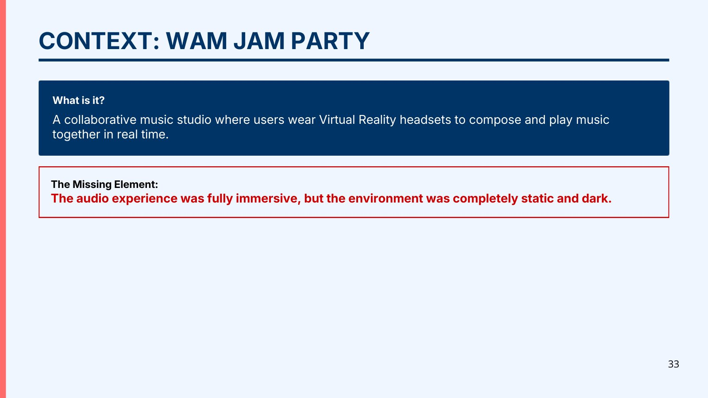

Lancez le beat : basses, médiums et aigus pilotent la grille. Les réglages à gauche (mappings, gain, lissage) se modifient en direct.

Ma partie de la soutenance : les Node3D (écrans, sphère, cubes qui affichent le shader) et l'interface volumique qui se génère à partir de l'en-tête ISF, testées sur Meta Quest 2.